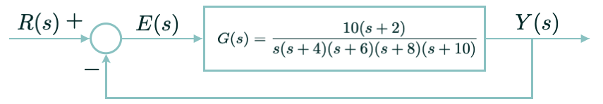

Um sistema está em seu ponto de equilíbrio se na ausência de novas entradas[1] ou perturbações, permanece no mesmo estado.
[1] Significa aqui: mudança no set-point (na entrada de referência do processo) ou mudanças paramétricas no sistema (por exemplo, quando varia a carga numa esteira transportadora, ele pode ficar mais lento ou mais rápido em função desta variação de carga).
Um ponto de equilíbrio pode ser:
Estável (regressa ao estado inicial
Simbolicamente pode ser representado pelo gráfico:
Ou matematicamente: seja \(y(t)\) a saída de um processo, neste caso, \(y(t)|_{t \to \infty} \rightarrow cte\) (ou seja, a saída converge para um certo valor), o que do ponto de vista gráfico pode ser exemplificado como:
Instável (não regressa ao estado inicial)
Simbolicamente pode ser representado pelo gráfico:
matematicamente, neste caso: \(y(t)|_{t \to \infty} \rightarrow \infty\) (a saída só aumentar de valor; o controle do processo foi "perdido"), o que graficamente pode ser representado pela figura:
Marginalmente estável ou neutro
Simbolicamente pode ser representado pelo gráfico:
neste caso: \(y(t)|_{t \to \infty} = cte\) (a saída do sistema é limitada, mas oscila entre 2 valores limites), ou graficamente:
Note que para o caso de um sistema LTI (Linear Time Invariant = Sistema Invariante no Tempo), implica que:
Observe que as figuras anteriores foram geradas, simplesmente variando o valor do ganho proportional no sistema mostrado na figura abaixo:
Note que dependendo do valor adotado para o valor do Ganho (bloco "Gain"), o sistema pode alternar de estável \(\rightarrow\) marginalmente estável \(\rightarrow\) instável.
a) Por exemplo: se o bloco Gain assume o valor \(K=3\), o sistema ainda é estável:
o gráfico da saída deste sistema resulta na figura já mostrada anteriormente:
A função transferência de malha-aberta para este sistema resulta em:
\(FTMA(s)=\dfrac{3}{s(s+1)(s+2)}\)
Fechando a malha teremos: \(FTMF(s)=\dfrac{FTMA(s)}{1+FTMA(s)}=\dfrac{\dfrac{3}{s(s+1)(s+3)}}{1+\dfrac{3}{s(s+1)(s+2)}}\)
trabalhando a expressão anterior obtemos:
\(FTMF(s)=\dfrac{3}{(s+2,672)(s^2+0,3283s+1,123)}\)
Note que os pólos deste sistema (raízes do denominador) resultam em:
\((s+2,672)(s^2+0,3283s+1,123)=0 \qquad \leftarrow\) (esta é a própria equação característica deste sistema)
\(s=\left\{ \begin{array}{l} -2,6717;\\ -0,1642 +j1,0469\\ -0,1642 -j1,0469\end{array} \right.\)
Note que os 3 pólos de MF (malha fechada) deste sistema estão localizado no semi-plano esquerdo do plano-s, ou seja, são estáveis, ou graficamente:
Os dados acima pode ser numericamente obtidos usando Matlab (ou Octave ou Scilab):
>> G=tf(1,poly([0 -1 -2]));
>> zpk(G)
1
-------------
s (s+2) (s+1)
Continuous-time zero/pole/gain model.
>> K=3;
>> ftmf=feedback(K*G,1);
>> zpk(ftmf)
3
---------------------------------
(s+2.672) (s^2 + 0.3283s + 1.123)
>> pole(ftmf)
-2.6717 + 0.0000i
-0.1642 + 1.0469i
-0.1642 - 1.0469i
>>Comentários referente ao script anterior:
Note que função tf() serve para ingressar o polinômio referente a uma transfer function (função transferência) no Matlab. Esta função espera 2 argumentos de entrada, o primeiro referente ao numerador da função, no caso \(=1\) e o segundo espera o polinômio referente ao denominador desta função, no caso, foi ingressado usando outra função do Matlab (função poly()) que fatora os termos de um polinômio se lhe foram passadas suas raízes (no caso: percebe-se que o polinômio \(s(s+1)(s+2)\) possui raízes em \(s=0\) (na origem; ou seja, é até um integrador), em \(s=-1\) e em \(s=-2\); estas 3 raízes são ingressadas para a função poly() como um vetor contendo 3 elementos, as 3 raízes \(\rightarrow\) [0 -1 -2]).
No Matlab fica fácil (e é bastante útil e oportuno sempre) verificar se uma função transferência foi ingressada corretamente, usando-se a função zpk(). Esta função tenta mostrar o conteúdo de uma função transferência no formato Ganho (k), pólos (p) e zeros (z) destacados.
Já a função feedback() como o próprio nome indica, determina o resultado de uma realimentação. O comando >> help feedback permite descobrir o que faz e como funciona esta função:
>> help feedback
feedback Feedback connection of two input/output systems.
M = feedback(M1,M2) computes a closed-loop model M for the feedback loop:
u --->O---->[ M1 ]----+---> y
| | y = M * u
+-----[ M2 ]<---+
Negative feedback is assumed and the model M maps u to y. To apply
positive feedback, use the syntax M = feedback(M1,M2,+1).
Traduzindo-se (livremente) para o português, significa que:
>> help feedback
feedback Conexão de realimentação de dois sistemas de entrada/saída.
M = feedback(M1,M2) calcula um modelo de malha fechada M para a malha de feedback:
u --->O---->[ M1 ]----+---> y
| | y = M * u
+-----[ M2 ]<---+
O feedback negativo é assumido (por padrão; se não informado) e o modelo M mapeia u
para y. Para aplicar um feedback positivo, use a sintaxe M = feedback (M1, M2, +
1). Note então que o primeiro parâmetro de feedback() se refere à função transferência do bloco "M1" (no caso do nosso exemplo, seria o resultado de: \(K \cdot \dfrac{1}{s(s+1)(s+2)}\) ou K*G; o segundo parâmetro se refere ao bloco "M2", que no nosso caso é unitário (\(=1\); realimentação unitárial não há bloco \(H(s)\) por exemplo). O terceiro parâmetro, se informado, indica o sinal da realimentação. Como no caso do nosso exemplo, trata-se de uma tradicional (e esperada) realimentação negativa, não é necessário informar este sinal, o próprio Matlab já assume que é uma realimentação negativa.
E por fim, a funçãp pole() calcula as raízes da função transferência passada como argumento de entrada da mesma. No caso, do nosso exemplo, estamos calculando os pólos de MF do sistema para nos certificarmos da posição dos mesmos no plano-\(s\).
b) Vamos supor agora que \(K=7\) (bloco Gain), então termos o sistema:
o que faz o sistema responder de forma instável como já mostrado na figura anterior:
Pode-se usar o Matlab para acelerar a obteção da \(FTMF(s)\) deste sistema e a posição de seus pólos de MF:
>> G=tf(1,poly([0 -1 -2]));
>> zpk(G)
1
-------------
s (s+2) (s+1)
Continuous-time zero/pole/gain model.
>> K=7; % Note: ganho aumentou!
>> ftmf=feedback(K*G,1);
>> zpk(ftmf)
7
----------------------------------
(s+3.087) (s^2 - 0.08675s + 2.268)
>> pole(ftmf)
-3.0867 + 0.0000i
0.0434 + 1.5053i
0.0434 - 1.5053i
>>Note que desta vez, percebemos 2 pólos no semi-plano direito do plano-\(s\): em \(s=+0.0434 + j1.5053\) e em \(s=+0.0434 - j1.5053\) -- são estes os pólos que justificam a instabilidade deste sistema (independente do polo real em \(s=-3.0867\), estável). Basta um pólo de MF no semi-plano direito do plano-\(s\) para tornar o sistema instável. Ou graficamente:
c) Caso de \(K=6\): sistema marginalmente estável:
Neste caso, o sistema responde como já mostrado anteriormente:
Aqui também podemos usar o Matlab para prever o comportamento deste sistema:
>> G=tf(1,poly([0 -1 -2]));
>> zpk(G)
1
-------------
s (s+2) (s+1)
Continuous-time zero/pole/gain model.
>> K=7; % Note: ganho aumentou!
>> ftmf=feedback(K*G,1);
>> zpk(ftmf)
6
---------------
(s+3) (s^2 + 2)
>> pole(ftmf)
-3.0000 + 0.0000i
0.0000 + 1.4142i
0.0000 - 1.4142i
>>Note que agora temos 2 pólos de MF localizados exatamente sobre o eixo \(j\omega\) (ou seja, com parte real nula), em \(s=\pm \, j1.4142\), ou graficamente:
Note nos 3 casos analizados, o impacto causado pelo valor do ganho \(K\).
Resp.: simplesmente analizando a localização dos pólos de MF deste sistema.
Ou em resumo:
a) Sistema Estável: a função de transferência de laço fechado possui pólos somente no semiplano esquerdo do plano-s.
b) Sistemas Instáveis: as funções de transferência de laço fechado possuem ao menos um de seus pólos no semiplano da direita do plano-s.
c) Sistemas Marginalmente Estáveis: suas funções de transferência de laço fechado exibem pólos sobre o eixo imaginário do plano-s.
Note que se, para o sistema anterior for mantido \(K=1\) (ganho unitário), teremos:
Neste caso o sistema responde da seguinte forma:
ou seja, a resposta ultrapassa em 14,5% o sinal de referência (degrau unitário) - o chamado sobrepasso ou overshoot (\(\%OS\)) e atinge seu valor em regime permanente (saida converge para variação menor que 2%) no tempo de \(t_s=12,4\) (segundos) (\(t_s=\)tempo de assentamento).
No Matlba este sistema pode ser calculado e simulando usando-se os comandos:
>> G=tf(1,poly([0 -1 -2]));
>> zpk(G)
1
-------------
s (s+2) (s+1)
Continuous-time zero/pole/gain model.
>> K=1;
>> ftmf=feedback(K*G,1)
1
---------------------
s^3 + 3 s^2 + 2 s + 1
>> roots([1 3 2 1])
-2.3247 + 0.0000i
-0.3376 + 0.5623i
-0.3376 - 0.5623i
>> zpk(ftmf)
1
----------------------------------
(s+2.325) (s^2 + 0.6753s + 0.4302)
>> pole(ftmf)
-2.3247 + 0.0000i
-0.3376 + 0.5623i
-0.3376 - 0.5623i
>> figure; step(ftmf)
>>Note que a funçãp step() permite simular (graficamente) o resultado da aplicação de uma entrada degrau sobre o sistema (função transferência) passada como argumento de entrada para a mesma.
Algums comandos extras podem ser usados para verificar a posição dos pólos de MF neste caso:
>> figure; pzmap(ftmf)O comando figure força o Matlab a abrir otra janela gráfica. Caso contrário, o próximo comando pzmap() apagaria o gráfico anteior gerado pela função step().
A função pzmap() mostra no plano-s a localização dos pólos e zeros da função transferência passada como argumento de entrada, o que neste caso, gera o gráfico:
Percebemos que não existe nenhuma raíz sobre o semi-plano direito do plano-s e portando o sistema é estável.
O gráfico mostrando as localizações dos pólos e zeros de MF de um sistema não é a única forma de prever a estabilidade de um sistema em MF. Também existe outra ferramenta, o uso de Diagramas de Bode, como mostra a próxima figura:
O Matlab permite obter o traçado anterior através da função margin. No caso, os seguintes comandos foram usados:
>> figure; margin(G)
>> grid
>> [Gm,Pm,Wcg,Wcp]=margin(G)
Gm = 6.0000
Pm = 53.4109
Wcg = 1.4142
Wcp = 0.4457
>> 20*log10(6) % para entender que K=6 implica K=15,56 dB
ans =
15.5630
>> Note que a função margin() além de traçar o diagrama de Bode, mostra e calcula alguns parâmetros interessantes usando esta ferramenta:
Gm = margem de ganho, ou, qual valor do ganho para realimentação passar a ser positiva ao invés de negativa (note que a curva de fase (Phase) avança de \(180^o\) o que significa sinal negativo na entrada de realimentação negativa do sistema, transformando o mesmo numa realimentação positiva com prováveis efeitos desestabilizantes. Notar que este valor, \(Gm\), define a partir de que instante o sistema passa a ser instável (ou sua fase passa dos \(180^o\)).Wcp = frequencia correspondente à margem de ganho, no caso \(\omega_{cp}=0,4456\) (rad/s).Pm = marge de fase;Wcg = frequencia onde ocorre a margem de fase;Nos ocuparemos mais de Diagramas de Bode posteriormente, quando usaremos esta ferramente para auxílio no projeto de controladores. Mas por hora, vamos nos ater aos pólos e zeros no plano-s ou Diagrama do Lugar Geométrico das Raízes para entender o conceito de estabilidade e também para auxiliar nos primeiros projetos de controladores.
Note que o sistema anteriormente usado para entender os conceitos de estabilidade e a diferença que pode fazer o valor de um ganho (\(K\)) dentro de um sistema, poderia ser interpretado como na realidade um controlador com pura ação integral, onde \(K\) neste caso, corresponderia ao valor do ganho integral ou \(K_i\) - repare na próxima figura:
E neste caso, surgem outras questões:
Seja a malha de controle apresentada na próxima figura:

Responda ao que se pede:
a) O processo \(G(s)\) é estável em malha-aberta? -(isto é, \(G(s)\) é estavel?)_
b) O processo acima é estável em malha-fechada? (Dica: implica determinar a \(FTMF(s)\) e descobrir seus pólos)
c) Determine para que faixas de ganho o sistema anterior é estável. (Implica acrescentar um bloco de ganho e arbitrar valores que resultem em pólos de MF com parte real positiva, no semi-plano direito do plano-s)
Observação: Você pode usar o Matlab ou outra ferramenta numérica para obter as respostas exigidas.
Mas tarde, quando for estudado de forma mais profunda, proeto de controladores usando técnica do lugar geométrico das raízes (ou mais simplesmente root locus) a faixa de ganho desejada e o comportamento deste sistema em MF poderá ser interpretado à partir de um gráfico semelhante ao mostrado na próxima figura:
A segunda parte deste conteúdo trata do critérios e arranjo de Routh-Hurwitz para determinar a estabilidade de um sistema.
NISE, Norman S. Cap 6) Estabilidade, In: Engenharia de sistemas de controle. 7. ed. Rio de Janeiro: LTC, 2017. xiv, 751 p. ISBN 9788521634355. Número de chamada: 681.5 N724e 7.ed.-2017.
NISE, Norman S. Cap 6) Estabilidade, In: Engenharia de sistemas de controle. 7. Rio de Janeiro LTC 2017 1 Acesso online. ISBN 9788521634379. Acervo BU/UPF: 5014181.
Visualizações:
Controle Automático II / Prof. Fernando Passold (criado em 24/03/2020)